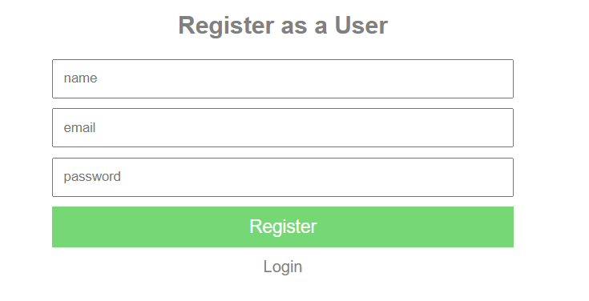

About
As a passionate software developer, my journey into the
world of programming began in high school computer
science courses, where I first dipped my toes into the
intricate world of code. It didn't take long for me to
realize that I loved programming and the endless
possibilities it offered.
My academic journey saw me embark on a quest for
knowledge, starting at the University of Waterloo. After
a year of exploration, I transferred to the University
of Alberta, where I diligently pursued my passion. In
June 2023, I proudly earned my Bachelor's degree in
Computer Science.
I am currently the CTO and part owner of DentHire, a
startup based in Edmonton, Alberta. I joined the team in
November 2023 as a Junior Software Developer and quickly
moved into leadership after demonstrating my skills,
ownership mindset, and ability to deliver results. Over
the past two years, I've led the full-stack development
of DentHire's core web application, which connects
dental professionals with dental offices. This has
included everything from designing and implementing new
features, integrating third-party services, and
optimizing performance, to collaborating closely with
the founders on product strategy and user experience.
DentHire is now transitioning from a development-heavy
phase into platform maintenance and a go-to-market
strategy. While I remain connected to the company in a
leadership capacity, I am seeking new opportunities
where I can continue to grow my technical skills, work
on diverse projects, and contribute to building
innovative products from the ground up.
My expertise spans a wide range of technologies and
programming languages, including Python, JavaScript, C,
Java, as well as a deep understanding of database
technologies such as MongoDB, MySQL, PostgreSQL, and
SQLite. I thrive on the challenges of creating servers
and APIs, seamlessly integrating third-party services,
and developing web applications using HTML, CSS, PHP,
TypeScript, jQuery, Bootstrap, TailwindCSS, React,
Node.js, Next.js, Deno, and Django.
In the mobile realm, I'm well-versed in crafting
applications using Java and Android Studio, React
Native, and Flutter. Quality assurance is paramount in
my work, and I have a comprehensive understanding of
various testing methodologies to ensure robust,
error-free applications. I also appreciate the
significance of a user-friendly interface, with a strong
background in UI design principles and practices.
My development process adheres to Agile methodologies,
with a proficiency in Scrum and sprint planning. I excel
in documenting the application development journey
through diagrams and reports, ensuring clear
communication and organized progress.
One of my key strengths lies in my ability to quickly
adapt to new languages and frameworks independently,
reflecting my unquenchable thirst for knowledge and
growth.
I'm thrilled to share my journey, experiences, and
projects with you as I continue to evolve as a software
developer. Feel free to explore my
portfolio to witness my passion and
dedication in action.
Projects
Travel Like a Local
Inspired by my love for travel and exploration, I
embarked on a personal project to create the
ultimate travel companion app. The purpose of this
app is to help users discover lesser-known local
experiences, hidden gems, and last-minute activities
- recommended by fellow travelers or locals.
This project is in development, but you can view the
code repository on GitHub
here.
Tech Stack
- React Native
- TypeScript
- Expo
- Supabase
- Google Maps & Places API
Here are some UI mockups I created to visualize the
app's design and user experience:
Coffee Shop
Due to my passion for continuous learning and
growth, I decided to learn next.js and continue to
enhance my React skills by creating a coffee
ordering web application.
View the code
here.
Simple Chat App
To further my understanding of websockets and
real-time communication, I embarked on a personal
project to create a simple chat application.
This project allowed me to enhance my backend skills
by developing a Node.js server that utilized the
Socket.io library to facilitate real-time
communication between clients. I used the Passport
authentication middleware to implement user
authentication, ensuring that only registered users
could access the chat application. I also integrated
express-session to manage user sessions.

To continue practicing my JavaScript and CSS skills,
I decided on a frontend that uses simple HTML, CSS,
and JavaScript to create a user-friendly interface.
I also use the ejs templating engine to dynamically
render user data on the client side.
View the source code for this project on my GitHub
repository
here. Run the project locally to see the chat
in action!
List It.
Introducing List It, the ultimate list-making
companion that adapts to your every need! Whether
you're organizing your thoughts, planning a trip, or
collaborating on a project, List It is your go-to
app for seamless list creation and sharing.
Key Features:
-
Versatile List Creation:
Craft lists for any purpose - from everyday
tasks to grand adventures. Customize your lists
with emojis, colors, and themes to make them
uniquely yours.
-
Effortless Sharing:
Share your lists with friends, family, or
colleagues with just a few taps. Collaborate in
real-time, ensuring everyone stays on the same
page. No more confusion or missed items!
-
Editable and Viewable
Grant editing access to collaborators so they
can contribute their ideas or simply allow them
to view the list. It's teamwork made easy!
-
Intuitive Interface:
List It's user-friendly design makes list-making
a breeze. Enjoy a smooth and visually pleasing
experience as you bring your ideas to life.
Here are some sneak peeks of the app's development
so far:
Tech Stack
- React Native
- Expo
- Node.js
- Firebase Authentication
- Firestore Database
My Running Board
As a freelance fullstack developer, I collaborated
closely with a client to elevate the functionality
of their existing website. Their specific
requirement centered around enhancing the
interactivity of the map page. To achieve this, I
harnessed the power of the Google Maps API, enabling
users to drag and customize their routes, and
providing the seamless option to open routes in
Google Maps navigation.
In this project, I expanded my skill set by
mastering PHP, skillfully combining it with my prior
expertise in JavaScript and HTML to create a highly
interactive map experience. One of the project's
most demanding aspects was the implementation of an
undo feature, a feature not natively supported by
Google Maps. To address this challenge, I devised a
sophisticated solution by utilizing a stack to track
and store changes made to waypoints before
committing them to the database. This not only
ensured the seamless functionality of the map page
but also provided users with a crucial ability to
amend and revert their route adjustments.
Daycare Management
During my last semester of university, I had the
opportunity to collaborate with a diverse team of
student developers on a multifaceted mobile and web
application project.
In this endeavor, I assumed the pivotal role of
Scrum Master, guiding our team through each sprint
with precision and dedication. Our primary mission
was to collaborate with an external client,
transforming their visionary concept into a tangible
working prototype. This journey took us through the
entire software development process, encompassing
the inception of user stories, the creation of
comprehensive diagrams, the meticulous design of
code architecture, and the ultimate deployment of
the application, facilitated by a robust continuous
integration pipeline. You can view a demo of our
application
here.
In addition to my Scrum Master responsibilities, I
actively contributed to the application's
development by spearheading various features and
functions. My focus was primarily on the frontend,
where I undertook the development of the activity
feed and the integrated camera. Furthermore, I
skillfully programmed the integration of numerous
endpoints into the frontend, ensuring seamless data
flow from the presentation layer through the
business layer, all the way to the database. This
collaborative effort contributed significantly to
the application's overall functionality and user
experience.
I engaged with a wide spectrum of cutting-edge
technologies throughout the project, each carefully
chosen to address specific aspects of our
development needs. Our mobile frontend was expertly
crafted using Flutter, a robust and versatile
framework. On the server side, we harnessed the
power of Django, complemented by an administration
webpage and a PostgreSQL database to manage and
organize our application's core functionality.
Deployment was made efficient and scalable thanks to
Docker and the Cybera platform.
To ensure seamless collaboration and efficient
project management, we relied on the dynamic
capabilities of GitHub. This encompassed
comprehensive code base management, issue tracking
and assignment, the organization of our storyboard,
and the facilitation of rigorous code reviews. Our
use of these technologies not only streamlined our
development process but also paved the way for a
highly functional and cohesive final product. You
can view our full design and project management
documents
here.

{kind=link}